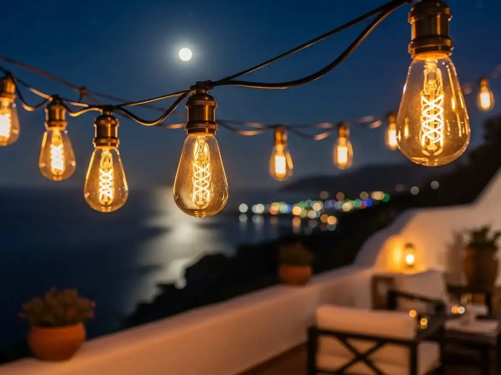
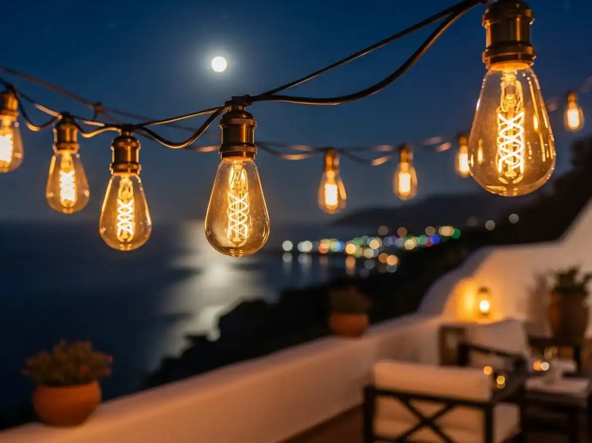

Explora cómo las guirnaldas de luces añaden un toque mágico en bodas rústicas en haciendas mexicanas, desde la planificación hasta el evento.
La Magia de las Guirnaldas de Luces en Bodas Rústicas
María y Alejandro siempre soñaron con una boda que reflejara su amor por la naturaleza y la historia de México. Desde el momento en que visitaron la Ex-Hacienda de Santa Mónica en Tlaxcala, supieron que había encontrado el lugar perfecto. Con sus muros de piedra y vigas de madera, el ambiente rústico de la hacienda era exactamente lo que buscaban.
La idea de iluminar su boda con guirnaldas de luces surgió durante una conversación casual con su wedding planner. La luz suave y cálida de las bombillas vintage prometía transformar el jardín de ahuehuetes en un escenario sacado de un cuento de hadas.
En este artículo, te llevaremos a través de cada etapa del proceso de planificación e instalación de las guirnaldas de luces para esta boda mágica. Aprenderás sobre la atención al detalle necesaria para lograr el efecto deseado y cómo un diseño de iluminación puede cambiar completamente la atmósfera de un evento.
Desde la primera llamada a REDEIL, una empresa mexicana con más de 30 años de experiencia en iluminación profesional, hasta el momento en que se encendieron las luces, acompañamos a María y Alejandro en cada paso del camino.
La Llamada que Inició Todo
Todo comenzó con una llamada de María a REDEIL. "Estamos buscando algo especial para nuestra boda," dijo, con un tono de esperanza en su voz. Quería que su boda fuera recordada no solo por la belleza del lugar, sino por la atmósfera mágica que soñaba crear.
Nuestro equipo, con una vasta experiencia en eventos en CDMX y alrededores, le presentó varias opciones. Sin embargo, fue la idea de las guirnaldas de luces lo que realmente capturó su imaginación. "Imaginen caminar por un sendero iluminado con luces cálidas que cuelgan entre los árboles," sugirió nuestro consultor.
La pareja estaba encantada. "Eso es exactamente lo que queremos," exclamó Alejandro. La visión de un cielo estrellado de luces en el patio central resonó profundamente con ellos.
Con la inspiración clara, comenzamos a planificar los detalles. Las guirnaldas de luces no solo embellecerían el lugar, sino que también crearían un ambiente acogedor y romántico, perfecto para la ocasión.
Eventos Realizados
REDEIL ha llevado a cabo más de 15,000 eventos en México, garantizando experiencia y calidad.
La Propuesta de Iluminación
REDEIL propuso un diseño que aprovechaba al máximo las características únicas de la hacienda. Empezamos por el patio central, donde las guirnaldas de luces se extenderían en un dosel sobre el área de recepción. "La clave es la distribución uniforme de las luces para no solo iluminar, sino también para crear una textura visual," explicó nuestro diseñador de iluminación.
Utilizamos bombillas Edison, conocidas por su filamento visible y su cálida luz de 2700K, para obtener un ambiente romántico. Las luces se colgarían a una altura de 3 metros, asegurando que iluminaran sin deslumbrar a los invitados.
El jardín con sus majestuosos ahuehuetes fue otro punto focal. "Imaginamos guirnaldas colgando entre los árboles, creando un refugio de luz y sombra," propuso el equipo. La distancia entre las bombillas se estableció en 40 cm para lograr un equilibrio perfecto entre iluminación y estética.
María y Alejandro quedaron encantados con la propuesta. "Es como un sueño hecho realidad," dijo María. Con el diseño aprobado, pasamos a la logística y planificación de la instalación.
Mantén la Coherencia
Asegúrate de que las guirnaldas de luces se integren con el tema general del evento para una estética cohesiva.
Detalles Técnicos y Logísticos
La instalación de las guirnaldas de luces es un proceso que requiere precisión y planificación. Calculamos que necesitaríamos aproximadamente 150 metros de luces para cubrir el patio central. Utilizando la fórmula de área x 1.5 metros, aseguramos una cobertura completa y uniforme.
Para la instalación, empleamos postes discretos y cables de acero, garantizando tanto la seguridad como la estética. El tiempo estimado para la instalación fue de dos días, considerando la complejidad del terreno y las estructuras de la hacienda.
En cuanto a los requerimientos eléctricos, cada metro de luces consumía aproximadamente 40W, por lo que se necesitó una planificación cuidadosa para la distribución de la carga eléctrica. Utilizamos extensiones de alta calidad para asegurar que toda la iluminación funcionara sin inconvenientes.
El día de la boda, el equipo de REDEIL estuvo presente para supervisar el encendido de las luces al atardecer. El momento fue mágico, y ver la expresión de los novios y sus invitados fue el mayor premio a nuestro esfuerzo.
Ventajas de las Guirnaldas de Luces
- Ambiente Único: Transforman cualquier espacio en un entorno mágico y acogedor.
- Versatilidad Decorativa: Se adaptan a diversos estilos de eventos, desde rústico hasta moderno.
- Eficiencia Energética: Las luces LED vintage ofrecen la misma estética con menor consumo.
- Fácil Instalación: Con la guía de expertos, las luces se instalan de manera rápida y segura.
- Atractivo Visual: Las guirnaldas añaden un elemento visual que mejora el ambiente general del evento.
Galeria de Series de Luces Vintage
 

Lista de Beneficios de las Guirnaldas de Luces
Las guirnaldas de luces aportan múltiples beneficios a cualquier evento:
- Ambiente Romántico: La luz cálida y suave crea un ambiente íntimo y acogedor.
- Estética Visual: Las luces colgantes añaden un elemento visual atractivo que eleva la decoración general.
- Versatilidad: Se pueden usar en interiores y exteriores, adaptándose a cualquier espacio.
- Bajo Consumo Energético: Las bombillas LED vintage ofrecen el mismo efecto visual con un 90% menos de consumo.
- Variedad de Diseños: Disponibles en distintas formas y tamaños para personalizar la decoración.
- Durabilidad: Las luces de alta calidad están diseñadas para resistir las condiciones del clima.
- Fácil Instalación: Con la ayuda de expertos, la instalación es rápida y segura.
- Economicidad: Comparado con otras opciones de iluminación, las guirnaldas son una opción económica.
Estos beneficios destacan por qué las guirnaldas de luces son una elección popular en bodas y eventos.
Consejos Prácticos para una Iluminación Perfecta
Lograr que las guirnaldas de luces sean el centro de atención en tu boda requiere algunos consejos prácticos:
1. Planifica con Anticipación: Consulta con expertos en iluminación, como REDEIL, para definir el diseño y la logística con tiempo. Esto te permitirá ajustar detalles y evitar sorpresas de última hora.
2. Considera el Espacio: Evalúa el entorno y las estructuras disponibles. Utiliza árboles, postes o cables para una instalación eficiente.
3. Selecciona el Tipo Correcto de Bombilla: Las bombillas Edison y LED vintage son ideales para crear una atmósfera cálida y romántica.
4. Distribución de la Luz: Calcula la distancia entre luces y la altura adecuada para asegurar una iluminación equilibrada.
5. Prueba las Luces Antes del Evento: Asegúrate de que todas las luces funcionen correctamente y ajusta según sea necesario.
Más Allá de las Luces: Complementos Decorativos
Las guirnaldas de luces son solo una parte de la decoración. Considera estos complementos para un efecto aún más impactante:
1. Faroles y Velas: Añaden un toque de elegancia y son perfectos para caminos o mesas.
2. Centros de Mesa Iluminados: Usa pequeñas luces LED para realzar los arreglos florales.
3. Cortinas de Luz: Crea un telón de fondo espectacular para el altar o la mesa de novios.
4. Letras Iluminadas: Personaliza el evento con iniciales o palabras especiales.
Estos elementos, combinados con guirnaldas, transformarán tu boda en un evento inolvidable.
Reflexiones Finales y Próximos Pasos
La boda de María y Alejandro en la Ex-Hacienda de Santa Mónica fue un éxito rotundo. Las guirnaldas de luces no solo cumplieron su función de iluminar, sino que también agregaron un toque mágico a la velada. Los invitados quedaron maravillados y los novios no podrían haber estado más felices.
Si estás planeando un evento y buscas una manera de hacerlo realmente especial, considera la iluminación como un elemento clave. Las guirnaldas de luces transforman cualquier espacio y crean una atmósfera que tus invitados recordarán para siempre.
No dudes en contactar a REDEIL al 55 3068 2988 para obtener asesoría personalizada y hacer de tu evento un sueño hecho realidad.
Preguntas Frecuentes
Las bombillas Edison y LED vintage son ideales por su luz cálida y bajo consumo energético.
Cada metro de luces consume aproximadamente 40W, dependiendo del tipo de bombilla utilizada.
Se pueden instalar usando postes, cables o directamente en árboles si el lugar lo permite.
Sí, siempre que se utilicen guirnaldas diseñadas para resistir las condiciones climáticas.
Generalmente, se recomienda una distancia entre 30 y 50 cm, dependiendo de la densidad visual deseada.
Cotiza tu Renta de Series de Luces Vintage Hoy
Recibe una propuesta personalizada para tu evento. Sin compromiso, respuesta en menos de 24 horas.
Cotizar por WhatsApp